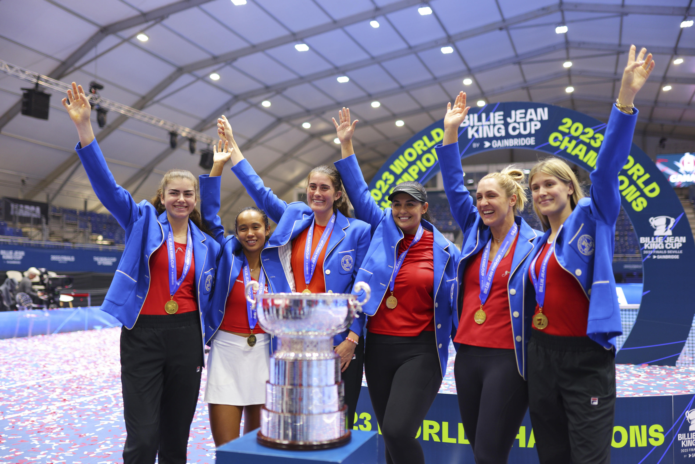

Tournaments
In tennis there are 5 different types of events that are played throughout the year . They include 125's , 250's , 500's , 1,000's , and grand slams . These tournaments determine the total amount of points that the winner can earn . At grand slams players can earn up to 2,000 points or the lowest at 250 .
November 12 - November 21
Billie Jean King Cup , Saville , Spain : April 14 - November 12 
The Billie Jean King Cup had celebrated its 50th anniversary this year and consists of over a hundred nations compete in it throughout the year . Different countries play playoff or qualifying matches against other countries to gaurantee there spot in the end of year competition . There were 9 of these which included Spain vs. Mexico , Ukraine vs . the Czech Republic , Great Britain vs. France , Canada vs. Belgium , U.S.A vs. Austria , Slovalia vs. Italy, Germany vs. Brazil , Poland vs.Kazakhastan , and Romaina vs. Slovenia . For the teams that played for the title included Czech Republic , Canada , Italy, Slovenia , U.S.A , Spain , France, and Germany . The four wildcard teams included Poland, Australia, Switzerland , and Kazahstan . These teams were divided into Group A , B, C, or D. Group A consisted of Switzerland( Belinda Bencic , Celine Naef , Simona Waltert , Jil Teichmann , and Viktorija Golubic) , U.S.A. (Danielle Collins , Taylor Townsend , Sofia Kenin , Peyton Stearns , Jessica Pegula , Sloane Stephens , Coco Guaff, and Caty Mcnally) , and the Czech Republic( Marie Bouzkova , Marketa Vondrousova , Katerina Siniakova , Linda Noskova , Karolina Muchova and Barbora Krejcikova). Group B consisted of Slovenia(Kaja Juvan , Tamara Zidansek , Ela Nala Milic , and Veronika Erjavec) , Australia ( Kimberly Birrel,Storm Hunter , Ellen Perez , Daria Saville , and Ajla Tomljanovic), and Kazahstan( Anna Danilina, Yulia Putintseva , Elena Rybakina , and Zhibek Kulambayeva). Group C consisted of Canada(Eugenie Bouchard ,Gabriella Dabrowski , Leylah Fernandez , Katherine Sebov, Rebecca Marino , and Marina Stakusic) , Spain(Sara Sorribes Tormo, Cristina Busca , Aliona Bolsova, Rebeka Masarova, Nuria Parrizas Diaz, and Marina Bassols Ribera) , and Poland(Magda Linette , Martyna Kubka, Magdalena Frech, Weronika Falkowska, Katarzyna Kawa, and Alicja Rosolska) . Group D consisted of Italy( Jasmine Paolini , Martina Trevisan , Lucia Bronzetti , Camila Giorgi , and Elizabetta Cocciaretto), France( Clara Burel , Caroline Garcia , Varvara Gracheva , Alize Cornet, Kristina Mladenovic) , and Germany(Eva Lys , Anna-Lena Friedsam , Tatjana Maria , Laura Siegemund , and Jule Niemeier) .Each group would play 3 matches and the winner of the group would advance to the semi's . The winner of Group A was the Czech Republic . The winner of Group B was Slovenia who was in their first ever semi-final at this competition. The winner of Group C was Canada who was seeking their first ever Billie Jean King Cup title . The winner of Group D was Italy. In the semi-finals , it was Canada vs. the Czech Republic. and Slovenia vs. Italy. Canada won vs. The Czech Republic 2-1 and Italy won against Slovenia 2-0. The final was set , Italy vs. Canada. Canada had never reached this stage before and the members of the team were very anxious . Canada beating Italy 2-0 and became champions of this event for the first time .
 The Nitto Atp Finals are the best 8 men of that season. It was played in Turin , Italy. The 8 men that competed in it included Novak Djokovic , Carlos Alcaraz , Daniil Medvedev , Jannik Sinner , Stefanos Tsistipas , Andrey Rublev , Holger Rune , and Alexander Zverev. These players were divided into 2 groups . The first would be the green group which composed of Jannik Sinner , Holger Rune , Novak Djokovic , and Stefanos Tsistipas. The second group is the red group and consists of Andrey Rublev, Daniil Medvedev , Carlos Alcaraz , and Alexander Zverev. In the green group, Jannik Sinner and Novak Djokovic advanced to the semi finals. In the red group , Daniil Medvedev and Carlos Alcaraz would advance to the semi-finals. In the semi finals , Jannik Sinner would play Daniil Medveedev and Novak Djokovic would play Carlos Alcaraz. Jannik Sinner and Novak Djokovic would play yet again in the final . Sinner and Djokovic played in the group stage , where Sinner prevailed 7-5 , 6-7, 7-6 . Djokovic was eager to win this match and wanted revenge . This ended up happening for Djokovic and would end up winning the final 6-3 , 6-3.
The Nitto Atp Finals are the best 8 men of that season. It was played in Turin , Italy. The 8 men that competed in it included Novak Djokovic , Carlos Alcaraz , Daniil Medvedev , Jannik Sinner , Stefanos Tsistipas , Andrey Rublev , Holger Rune , and Alexander Zverev. These players were divided into 2 groups . The first would be the green group which composed of Jannik Sinner , Holger Rune , Novak Djokovic , and Stefanos Tsistipas. The second group is the red group and consists of Andrey Rublev, Daniil Medvedev , Carlos Alcaraz , and Alexander Zverev. In the green group, Jannik Sinner and Novak Djokovic advanced to the semi finals. In the red group , Daniil Medvedev and Carlos Alcaraz would advance to the semi-finals. In the semi finals , Jannik Sinner would play Daniil Medveedev and Novak Djokovic would play Carlos Alcaraz. Jannik Sinner and Novak Djokovic would play yet again in the final . Sinner and Djokovic played in the group stage , where Sinner prevailed 7-5 , 6-7, 7-6 . Djokovic was eager to win this match and wanted revenge . This ended up happening for Djokovic and would end up winning the final 6-3 , 6-3.